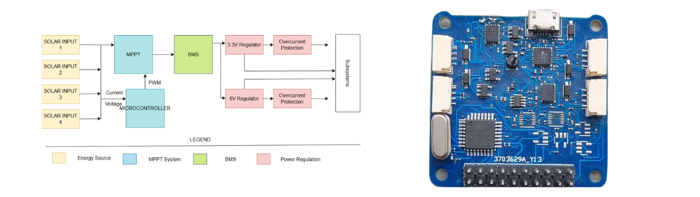
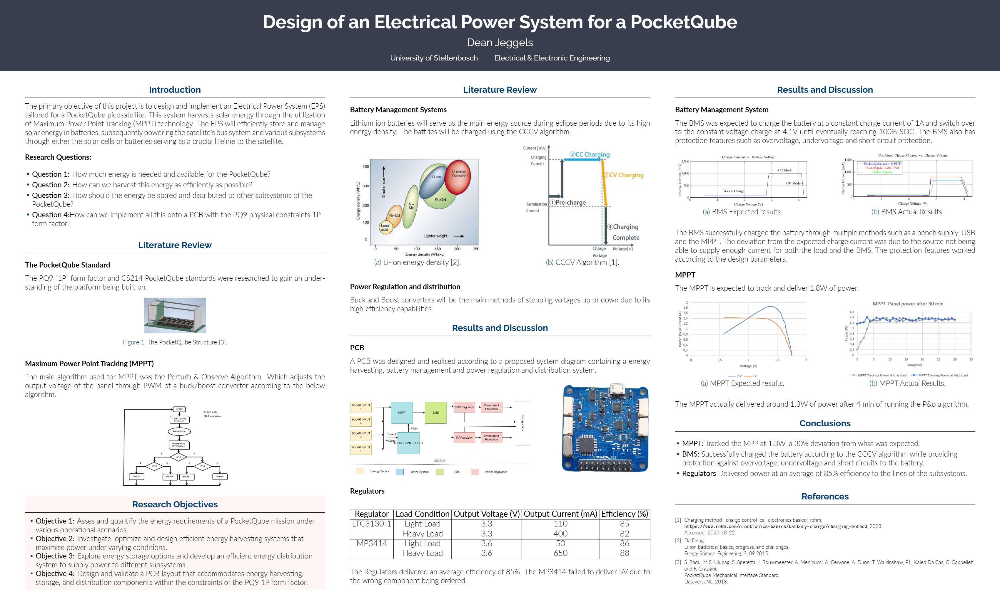

EPS for a PocketQube V1
Project Overview
My final year project focuses on the design and implementation of an Electrical Power System (EPS) tailored for a PocketQube picosatellite. This EPS is engineered to harvest solar energy using Maximum Power Point Tracking (MPPT) technology, efficiently store it in Li-ion batteries, and provide reliable power to the satellite’s bus system and subsystems.
Objectives
- Energy Harvesting: Develop a system to capture and convert solar energy using photovoltaic cells. Implement MPPT algorithms to optimize energy harvesting under varying environmental conditions.
- Power Regulation: Design Boost and Buck converters to manage voltage levels for different subsystems, ensuring stable power supply.
- Battery Management: Create a robust battery management system (BMS) to handle charging and discharging cycles. Incorporate protection mechanisms to prevent overcharge, overdischarge, and short circuits.
- System Integration: Combine all components into a compact Printed Circuit Board (PCB) that fits within the constraints of the PocketQube form factor. Ensure the EPS meets the rigorous standards required for space applications.
Methodology
The project methodology includes conducting a literature review, system design, prototyping, and rigorous testing.
- Literature Review: Studied existing EPS designs and MPPT techniques to inform the design process. Studied the PocketQube standard to ensure compliance with its physical and operational requirements.
- System Design: Developed the hardware and software components for the EPS. Utilized the LTC3130-1 Boost-Buck converter for MPPT and the LTC4066 for battery charging. Implemented a Perturb & Observe algorithm for MPPT to dynamically adjust the operating point based on solar panel conditions.
- Prototyping and Testing: Built prototypes of the EPS and conducted rigorous testing under various conditions. Validated the performance of the MPPT algorithm, power regulation circuits, and BMS.
Key Components
- Energy Harvesting: Photovoltaic cells capture solar energy. The Perturb & Observe MPPT algorithm maximizes power extraction from the PV cells.
- Power Regulation: Boost and Buck converters adjust voltage levels to match the needs of different subsystems. Ensures efficient power delivery and minimizes energy loss.
- Battery Management System: Utilizes a Constant Current Constant Voltage (CCCV) charging algorithm for efficient battery charging. Incorporates the BQ29700 IC for battery protection, ensuring safe operation by preventing overcharge, overdischarge, and short circuits.
- System Integration: All components are integrated into a compact PCB layout that fits within the PocketQube’s form factor. Ensures seamless operation and compatibility with other subsystems of the satellite.
Results
- Efficient Energy Harvesting: Successfully implemented the Perturb & Observe MPPT algorithm, achieving optimal energy capture from the photovoltaic cells. Demonstrated the ability to dynamically adjust to changing environmental conditions, ensuring maximum power output.
- Reliable Power Regulation: Designed and tested Boost and Buck converters that effectively manage voltage levels, providing stable and efficient power to the satellite’s subsystems. Achieved high efficiency in power conversion, minimizing energy loss.
- Robust Battery Management: Developed a BMS that ensures safe and efficient charging and discharging of Li-ion batteries. Implemented comprehensive protection mechanisms to prevent battery damage and enhance longevity.
- Successful System Integration: Integrated all components into a compact and efficient PCB design, meeting the stringent size and weight constraints of the PocketQube standard. Conducted successful testing, demonstrating the EPS’s capability to power the satellite reliably in various conditions.
Conclusion
The "Design of an Electrical Power System for a PocketQube" project provides a significant contribution to the field of picosatellite technology. The developed EPS offers a reliable and efficient solution for harvesting, storing, and distributing energy in space-constrained environments. The insights gained from this project can be applied to future EPS implementations, further advancing the capabilities of PocketQubes and other small satellites.
This project has been a rewarding journey, and I am deeply grateful to my supervisor, Dr. A. Barnard, and everyone who supported me throughout the process. The experience has equipped me with valuable skills in system design, power management, and project execution, and I look forward to leveraging these skills in future endeavors.
Project Poster:
